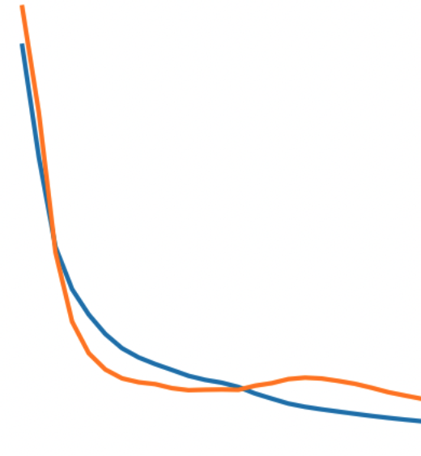

Neural Network Framework
From scratch neural net implementation with customizable layers and units syntactically similar to Tensorflow. Implemented 4 different activation functions and 2 different loss functions.
Applied towards tumor classification task using Kaggle data.